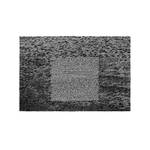

Quick Takes (April 2018)
Welcome to another installment of Quick Takes, your monthly consumer guide to all things music!
For those keeping track, you might've noticed that last month's edition featured two 'Believe the Hype' entries, an anomaly considering I've hardly given that distinction in the past. This month, things have considerably normalized. But it's not without its highlights - I was genuinely surprised with The Longcut's unexpected return, Arrows, and also rather enjoyed the more strictly-by-definition indie rock of Wye Oak and Hop Along (both of which feature proper sentences as an album title, I might add). Carl, on the other hand, praised Unknown Mortal Orchestra's fourth album streak with their latest, Sex & Food. Not much in terms of a negative review, but I did have my qualms with A Perfect Circle's self-righteous return, a band whose debut album is still one of my favorite nineties hard rock efforts.
What were your favorite albums during the month of April? Anything we didn't get to review on our site that we should've? You can always reach us on Facebook, or on our official twitter page. - Juan
...
 A Perfect Circle
A Perfect Circle
Eat the Elephant
(BMG)
A Perfect Circle have endured longer than their expected shelf life. Once considered a supergroup - or at least a more radio-friendly adjunct to much-adored prog-rockers Tool - the alt-metal band released a trio of successful albums before they also took an extended hiatus. And after fourteen years, frontman Maynard James Keenan and main songwriter Billy Howerdel reignite the project with Eat the Elephant, where they balance their artfully brooding sound with biting social critique. Maynard isn't necessarily preaching himself as a beacon of good, and instead wants to inspire some reflection. But his ornate poeticisms can sometimes across as rote - in Disillusioned, he warns about the gross consumption of personal technology, while in TalkTalk, he cautions about those who hold a morally superior stance for personal gain. Maynard has a lot on his mind, which isn't out of character for him. Oddly, they've shifted their typically atmospheric, murky sound with bland, piano-driven alternative pop. They rekindle some of that fiery passion with The Doomed, a stunning example of grand, orchestral rock with some majestic touches. But for every explosive, curtain-closing exit there's the lifeless anthem; take So Long, and Thanks for All the Fish, where they embody the spirit of U2 as if experiencing an identity crisis. Ultimately, Eat the Elephant is a more well-timed and mature effort, but it also softens their resistance with little impact. [5/10] Juan Edgardo Rodríguez
 Forth Wanderers
Forth Wanderers
Forth Wanderers
(Sub Pop)
When considered the backdrop behind Forth Wanderers forming in a New Jersey high school (guitarist Ben Guterl sent a girl he had a crush on some instrumental songs, who then returned them lyrically attired, thus becoming the front woman for his vocalist-light band), it is only natural that the band’s sound would be perfectly suited adorning a bittersweet, angst-ridden indie teen movie. The chemistry between the sloppy jangle of fuzzy guitar melodies from Guterl and the spirited steel of Trilling’s voice is potently reactive, meandering amongst non-urgent rhythms and hitting back at each other’s money shots. It’s an extremely endearing arrangement, with ‘90s indie’s best bits providing the canvas to work from. The self-titled record is their Sub Pop debut - and follow-up to 2014’s Tough Love - but already Forth Wanderers ooze the confidence and candidness to make themselves major players in their indie-pop sphere. [7/10] Carl Purvis
Grouper
Grid of Points
(Kranky)
Liz Harris steps into a desolate place on Grid of Points. Harris, who goes by the moniker Grouper, has always observed her ambient projects through a minimal scale. She's also changed the scope of her work with each new release, and Grid of Points is no exception. Recorded during a residency in 2014 shortly after the release of Ruins, the 22-minute composition spills softly like a calm tide, the morning after a storm wrecked havoc. It finds Harris in a state of restful contemplation, and as it is with most of her work, we're left to decipher its open interpretation. A soothing piano caresses her loping vocal ache, one movement after the next, as she slightly tempers the mood despite its unfluctuating appearance. It sometimes renders a bit slight and doesn't have quite the volume of her best material. But Grid of Points pulls you in all the same, and as it is with Harris's best work, she emanates a mysterious allure. [7/10] Juan Edgardo Rodríguez
 Hop Along
Hop Along
Bark Your Head off, Dog
(Saddle Creek)
Frances Quinlan is such an evocative singer that it sometimes even overshadows the intricate songwriting of Hop Along. But the Philadelphia indie rock group like to work in abstract, as they form and break down their songs into borderless, open-ended contours on their third full-length record, Bark Your Head off, Dog. Quinlan, ever the conversant, narrates through the eyes of a novelist. Her observations are both ruminant and matter-of-fact - she levels her worth against the unchecked privilege of men on Not Abel, muses about the significance of sharing a life with a loved one on How Simple, and considers the implications of forming crucial decisions on Somewhere a Judge. Through her fictitious accounts, the band follows with a harmonious balance of dissonant transitions. Other times, their song structures are more conventional, even if they take on a few grinding solos and lush string accompaniments. It makes for a sometimes confounding if indecisive listen, but Quinlan's passionate eye for detail hasn't withered in the slightest. [7/10] Juan Edgardo Rodríguez
 Kali Uchis
Kali Uchis
Isolation
(Universal)
The debut LP from Kali Uchis demonstrates her potential to become a "Queen of R&B," but it’s her ability to melt the contemporary motifs of hip-hop, jazz and garage into an alloy of slinky soul that makes the sky her limit. Isolation moves seamlessly from genre to genre, oozing around the world like the lava of a neatly erupting volcano, pulling in everything from scorching desert vibes to dominant club grooves. With such a wide-ranging collection of retro sounds blended into one record, the fact that the album’s near 45-minute runtime avoids any real stale moments is another triumph from Uchis. From the deliciously smoky jazz of opening track Body Language to the subtly powerful closer Killer, Isolation has all the makings of a gravitational force. [7/10] Carl Purvis
 The Longcut
The Longcut
Arrows
(Deltasonic Records)
Sometime in the past decade or so, dancing to rock music became an unfashionable concept. Back in 2006, The Longcut slipped into that movement even if they never experienced the overnight buzz of acts like The Rapture and Klaxons. So to hear that the Manchester trio is back after a nine-year absence, and without moving too further away from their intended sound, is genuinely surprising. Their third full-length, Arrows, sounds like a decade-past time capsule into clashing electro-rock - from Kroqd's chiming metallic hits and industrial-tinged guitars to Popic's sustained groove, every mechanized beat is carefully sculpted. Their anthemic abandon occasionally escalates into some movingly towering moments, like in the emotionally-charged finale Monuments, but never without losing their course into wearisome soundscapes. Arrows sounds confident yet grounded, coming from a trio of musicians who follow their city's erstwhile dance rock without any binds or restraints. It's a determined, finely-calibrated effort that, more than anything, celebrates creativity as a true self-retreat. [8/10] Juan Edgardo Rodríguez
 Speedy Ortiz
Speedy Ortiz
Twerp Verse
(Carpark)
It’s 2018, and it’s time for my latest love letter to Speedy Ortiz. If anyone’s read my takes on Sadie Dupuis's work in the past, you’ll know that I positively gush over Dupuis’s tantalising wordplay and her band’s guitars - equal parts needling, angular crawlers and equal parts inflated buzzsaws. With their 3rd LP, the Massachusetts four-piece are at their most pop-sensible, with the ever-growing influence of the synths that first made an appearance in second LP Foil Deer before becoming a more focal point of Dupuis's 2016 solo effort, Slugger. The sound hasn’t lost any of its poise - always ready to strike without warning - and a new guitarist in Andy Molholt brings a different breed of animal to the spikier wieldings of Foil Deer guitarist Devin McKnight. Dupuis is the jewel, though. She leads from the front with an outrageous level of assuredness and a delightful penchant for a hook. [8/10] Carl Purvis
 Tom Misch
Tom Misch
Geography
(Beyond the Groove)
South London-beatmaker Tom Misch has made a name for himself as one of the most talented producers in the UK over the last few years, but his proclivity in branching into the electro-jazz spectrum has won him legions of new fans to add to the groove-fiends that were enamoured by his earlier beat tapes. With his debut LP, Geography, he proves himself as a stunning guitar player, taking advantage of the malleability of his jazz chords and exploring his frets like the body of his soulmate. In addition to his guitar work, his voice is laced with a delectable, soulful tone, and of course he hasn’t forgotten about the scintillating grooves that are still his bread and butter. The album’s guestlist isn’t to be snuffed at, either - something that is surely indicative of the calibre of his production work - and the album’s best track sees his South London mate Loyle Carner provide the lax tones on Water Baby. The album is extremely easy to listen to - so much so that it can veer slightly into monotonous territory - but it’s a soundscape that is impossible to dislike. [7/10] Carl Purvis
Unknown Mortal Orchestra
Sex & Food
(Jagjaguwar)
Ruban Nielson’s fourth LP behind the kaleidoscopic moniker that is Unknown Mortal Orchestra is a thing of delicate beauty for the most part, and is a different kind of stimulant to the colourful libido of 2015’s Multi-Love. Instead of haphazardly splashing colour far and wide, Nielson is comfortable enough in his own songwriting to settle into airtight grooves - with the assistance of the clattering, shifty drums from his brother - and allow them to simmer for a few golden moments. His guitar playing is sensational, and his use of warping effects to achieve the right mix of tightness and sensitivity gets better with each UMO record. Take Hunnybee, for example. The guitar lick is alluringly pleasant, the groove mirrors its accuracy, and Nielson’s vocal is the gentlest touch to a fragile being. The album’s keystone is an anomaly, too - the furious American Guilt - and had the red meat lover in me salivating from the first listen. [8/10] Carl Purvis
 Wye Oak
Wye Oak
The Louder I Call, the Faster it Runs
(Merge)
A tradition of quiet reinvention follows Jenn Wesner and Andy Stack. The Baltimore duo, who share a longtime partnership with Wye Oak, have explored the dreamier undercurrents of indie rock without repeating their output. And their sixth release, The Louder I Call, the Faster it Runs, further shifts towards the more electronic direction they've taken since 2015's Shriek. But the duo never works under such strict terms, and mostly use steady bobs and bits to give their songs a uniform structure. There's Lifer, for instance, where an oscillating synth line provides a tonal backdrop to its lush guitar workouts. Or the nervy Over and Over, where they deconstruct their past folk leanings into a dystopian romp. Within these slight unorthodox touches lie themes of self-doubt and existential reflection, carefully tailored against Wesner's silvery vocals. The Louder I Call... is another step forward for Wye Oak, a duo who still carry plenty of vision to inject some life into a form of indie rock that you don't hear that often anymore. [7/10] Juan Edgardo Rodríguez
21 May, 2018 - 04:17 — No Ripcord Staff